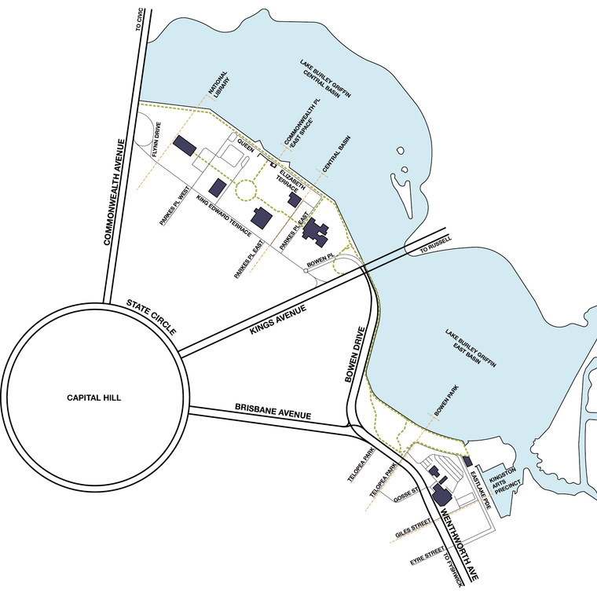

About us
What is Contour556?
Contour 556 is the water level of Lake Burley Griffin, which links the event in name as well as in purpose to the history of the central Canberra landscape. The artworks and installations selected for the festival respond in some way to Canberra’s history, from 50,000 years to the present day. contour 556 will therefore offer the Canberra, Australian and international community a unique opportunity to engage with and understand the layers of Canberra’s history through art.
Meet the team
Neil Hobbs
Neil is a landscape architect and director of Harris Hobbs Landscapes, a Canberra based landscape architectural firm that has operated for over 30 years. In their practice they integrates art into the public realm, through memorial design, commissioned works, artwork installation, and collaborating with temporary events in the art and design field.
Neil was the curator of Sculpture in the garden, at Lambrigg, in 2013, and was the curator of contour 556 2016 and 2018, which began as part of his PhD research that focused on the transformation of space into place, through temporary art interventions.
Karina Harris
Karina is a landscape architect and director of Harris Hobbs Landscapes, a Canberra based landscape architectural firm that has operated for over 30 years. In their practice they integrates art into the public realm, through memorial design, commissioned works, artwork installation, and collaborating with temporary events in the art and design field.
She has strong community and design involvement as Chapter President of The Australian Institute of Landscape Architects (2012-2014) and a board member of Canberra Contemporary Art Space since 2008. She is committed to the development of the ACT and regions Visual Arts sector through philanthropic activities such as the 2014 and 2017 Canberra Grammar School Small Sculpture Prize, and the ANU School of Arts and Design Harris Hobbs materials award to a post graduate student (awarded each year since 2007).
Hesson Jung
Heeseon Jung is a Landscape technician at Harris Hobbs Landscapes (HHL) and assist the team in realising their visions in technical and visually appealing drawings. She is well-versed in industry design tools to produce concepts and detailed design documentation, as well as web / print publications for HHL and affiliated events such as contour 556.
Heeseon was involved in the 2020 contour 556 festival and has supported the design, production, and maintenance of the festival’s website, and publication materials. Heeseon is passionate about design and how it affects the physical world we interact in.